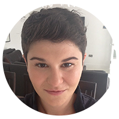

<div class="row intro">
  <div class="col-md-12">
    <div class="jumbotron">
      <h2>Meet me</h2>      
      <div class="row">
        <div class="col-md-12">          
          <div class="meet-BRD">
            <div class="row about-yael">
              <div class="col-md-2 about-left">
                <br>
                <div class ="hidden-xs hidden-sm">
                  
                </div>
                <h2><strong>Luisa Gottardo</strong></h2>
                <div class="about-icons">
                  <a href="http://uk.linkedin.com/pub/luisa-gottardo/15/178/ab4/" target="_blank"></a>
                  <a href="http://twitter.com/lu1820" target="_blank"></a>
                </div>
              </div>
              <div class="col-md-10 about-right">
                <br>
                <p>I am an experienced copywriter and Digital Content Executive based in London and Hertfordshire. </p>
                <p>I love writing, and having the leeway to produce creative and engaging content for a wide range of people. I enjoy understanding what makes people tick, and what people enjoy reading.</p>
                <p>I always try to be adventurous and daring, and I truly revel in what I do. I like writing content for both online and offline products, including news articles, blog posts and opinion pieces.</p>
                <p>I love to travel, sport runs through my veins, and I get through 10 books on a two week holiday.</p>
                <div class="yael-skills">
                  <p><strong>Skills:</strong></p>
                  <p>Sitecore CMS System | Digital Marketing | Copywriting | Proofreading | Grammar | Attention to detail | Social Media | Media Relations | Blogging | Event Management | Networking | Internal Communications | CRM Emails | Research | Image Sourcing</p>
                </div>
                <div class="yael-exp">
                  <p><strong>Previously:</strong></p>
									<p>I have over 10 years experience writing for some of the most exciting publications and companies around.</p>
									<p>I have worked with titles and businesses including <a href="http://davidlloyd.co.uk" target="_blank">David Lloyd Leisure</a>, <a href="http://divamag.co.uk" target="_blank">Diva Magazine</a>, <a href="http://www.searchofficespace.com" target="_blank">Search Office Space</a>, <a href="http://www.ladbrokes.com" target="_blank">Ladbrokes</a> and <a href="http://www.weareoctopusgroup.net" target="_blank">Octopus Communications</a>.</p>     
               </div>
              </div>         
            </div>
          </div>
        </div>        
    </div>   
  </div>
</div>